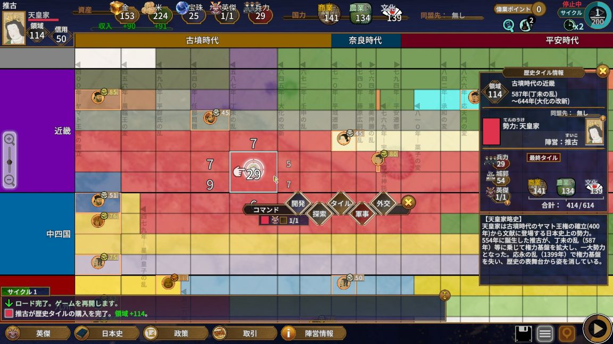
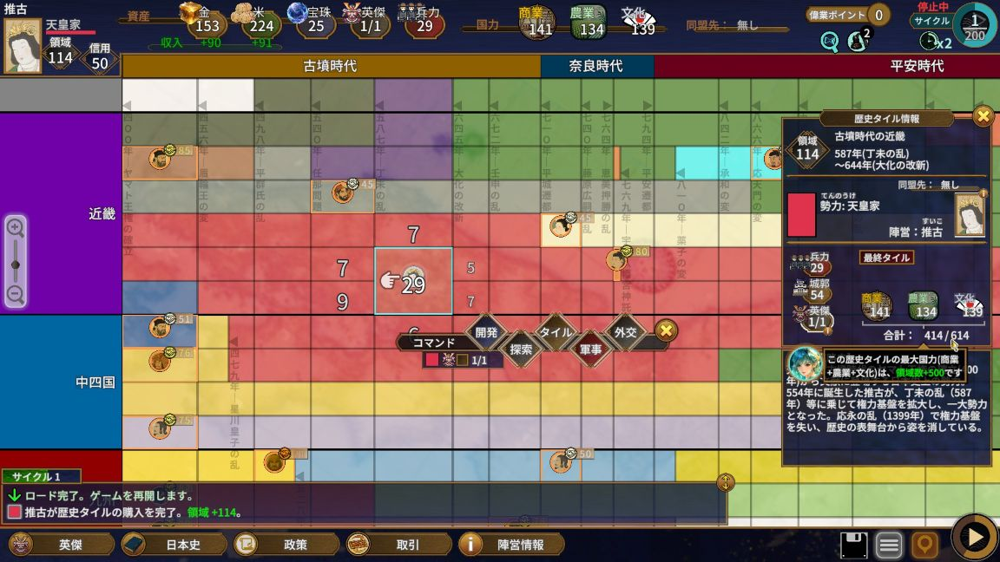
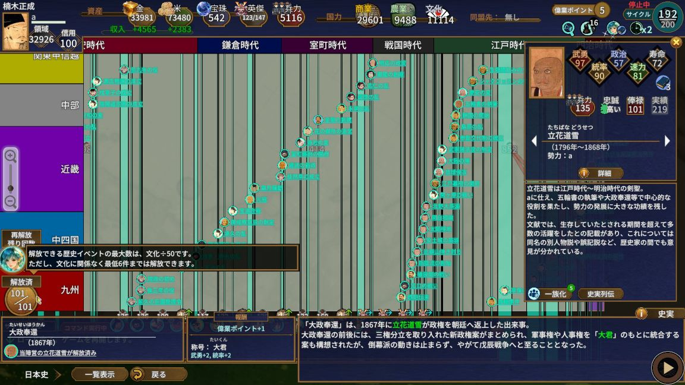
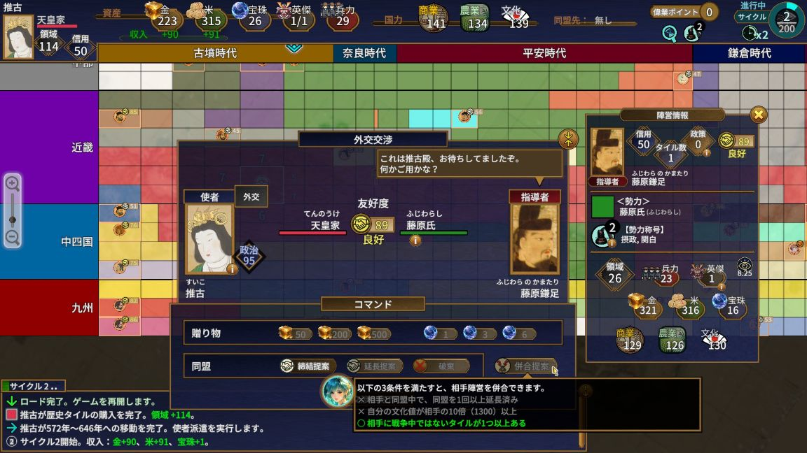
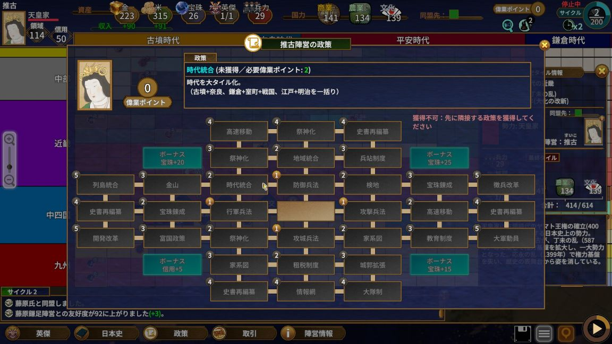
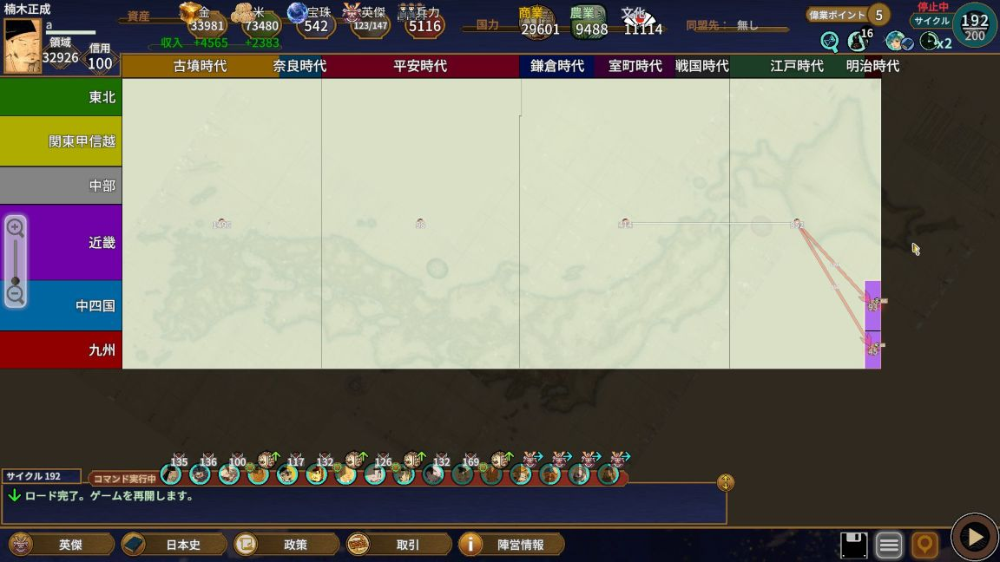

『日本史大戦』を複数回プレイし、難易度「上級」で日本史統一までクリアしました。
この記事では、プレイ中に分かりにくかった基本仕様やおすすめ政策、 文化制圧と戦争制圧を中心にした進め方を紹介します。
攻略情報がまだ少ない作品なので、実際にプレイして分かったことを中心にまとめていきます。
※本記事はVer.1.1.3.1で確認した内容をもとに作成しています。 アップデートにより、仕様が変更される可能性があります。
プレイ前に知っておきたい基本仕様
1回のゲームは200サイクル
1回のゲームは200サイクルで終了します。 限られたサイクルの中で領域を広げ、英傑を集めながら日本史統一を目指します。
マップは地域と時代で区切られている
マップは縦方向が地域、横方向が時代で区切られており、 それぞれの区画が「歴史タイル」になっています。
異なる地域や時代の歴史タイルでは、兵力や内政値などが別々に管理されます。 序盤は支配する歴史タイルが分散しやすく、兵力や内政の管理が複雑になりがちです。

政策の「時代統合」や「地域統合」を取得すると、 複数の歴史タイルをまとめて管理できるようになります。
開発できる国力には上限がある
開発では、商業・農業・文化の数値を上昇させます。 商業・農業・文化の合計が、その歴史タイルの「国力」です。
歴史タイルには、支配している領域の広さに応じた最大国力が設定されており、 上限を超えて開発することはできません。 周囲の同色タイルを購入したり、戦争で領域を奪ったりすると支配範囲が広がり、 最大国力も増加します。

一度開発した商業・農業・文化の数値は、通常の操作では振り直せません。 戦争によって内政値が減少すれば開発し直すことはできますが、 損失の方が大きいため、序盤から一つの項目だけへ偏らせすぎない方が安全です。
特に文化だけを優先しすぎると、商業や農業が不足し、 領域の購入や徴兵に支障が出ることがあります。
「日本史」コマンドで歴史イベントを解放する
「日本史」コマンドを実行すると、条件を満たした歴史イベントを解放できます。 歴史イベントを解放すると、政策の取得に必要な「偉業ポイント」を獲得できます。
解放できる歴史イベントの最大数は「文化値÷50」です。 ただし、文化値が低い場合でも最低6件までは解放できます。 全101件を解放する場合は、文化値5050が必要です。

英傑は活動できる時代が決まっている
英傑は基本的に、生存している時代の歴史タイルでしか行動できません。 宝珠を消費すると「歴史移動」を行い、別の時代へ移動できます。
また、「歴史移動」のスキルを修得した英傑は、 宝珠を消費せずに時代を移動できます。
一族に加えると英傑を強化しやすくなる
政策「家系図」を取得すると、任意の所属英傑を一族へ加えられるようになります。
- 俸禄が5分の1になる
- 能力値の上限が120まで上昇する
- 「就任」コマンドで称号を与えられるようになる
- 称号によって能力値やスキルポイントを強化できる
歴史イベントそのものは、一族に加えていない英傑でも解放できます。
ゲーム終了後に歴史書を編纂すると、歴史イベントの解放履歴が次回以降のプレイへ引き継がれます。 イベントに付随する称号は、解放した英傑の固有称号として追加されます。
同盟は3勢力まで
同時に同盟を結べるのは3勢力までです。 これは敵勢力も同じで、相手がすでに3勢力と同盟を結んでいる場合は、 使者を送っても新しく同盟を結べません。
中盤以降は同盟枠が埋まっている勢力も多く、 どこかの勢力が滅亡して同盟枠が空くまで待つ場面もあります。
同盟相手には「併合提案」ができる
次の条件をすべて満たすと、外交で使者を送り、 同盟相手へ「併合提案」を行えます。
- 同盟締結後、一度以上同盟を延長している
- 相手勢力に、戦争中ではない歴史タイルが1つ以上ある
- 自勢力の文化値が、相手勢力の文化値の10倍以上ある

同盟は、締結から20サイクルが経過して残り期間が5サイクル以下になると延長できます。
条件を満たして併合提案を行うと、相手勢力は拒否できません。 相手の領域・資源・兵力・英傑・開発済みの歴史タイルを、 追加コストなしでまとめて獲得できます。
おすすめ政策
政策のうち、1・4・5コストの配置は固定ですが、 2・3コストの配置はゲームごとに変わります。 取得順を完全に固定するのではなく、そのときの配置や自勢力の状況に合わせて調整してください。

序盤におすすめの政策
時代統合・地域統合
分散している歴史タイルをまとめられるため、内政や兵力の管理が楽になります。 防衛する歴史タイルも少なくなり、城郭強化や兵力配置へ使う資源を抑えられます。
中盤におすすめの政策
列島統合
「地域統合」の上位にあたる政策で、日本列島全体を一つにまとめられます。 取得には「時代統合」「地域統合」と、文化値2000以上が必要です。
情報網
すべての歴史タイルと陣営の情報を確認できるようになります。 相手の兵力や城郭を常時確認できるため、戦争を仕掛ける前の戦力比較に役立ちます。
金収入と米収入がそれぞれ2％増える効果もあり、地味ながら扱いやすい政策です。
家系図
1回取得するごとに、所属英傑を5人まで一族へ加えられます。 俸禄の軽減、能力値上限の上昇、就任による称号付与が可能になります。
富国政策
歴史タイルの最大国力を1.2倍にします。 商業・農業・文化をさらに開発できるようになり、 収入や徴兵力を確保しながら文化値も伸ばしやすくなります。
終盤におすすめの政策
大隊制・大軍動員・徴兵改革
終盤は大規模な勢力同士の戦争になりやすいため、兵力を揃える政策を取得しておきます。 特に戦争制圧を中心に進める場合は、敵勢力との兵力差を作るために重要です。
史書再編纂
自勢力ですでに解放した歴史イベントを、5回まで再解放できます。
在野や敵勢力の英傑が先に解放した歴史イベントを、 自軍の英傑で解放し直すことができます。 称号や能力上昇を特定の英傑へ集め、 次回以降のプレイで強い固有称号を持つ英傑を育てたい場合に役立ちます。
文化制圧と戦争制圧のどちらを選ぶか
初期位置や周囲の勢力によって、進めやすい攻略方針が変わります。
周囲に購入できる同色タイルが多く、文化を伸ばす余裕がある場合は、 併合提案を狙う文化制圧が有効です。
一方、マップ中央寄りの勢力や、周囲に同色タイルが少ない勢力は、 序盤から戦争で領域を広げる必要があります。
実際にはどちらか一方へ完全に絞るよりも、 大きな勢力を文化制圧し、小さな勢力を戦争で制圧する形が効率的です。
序盤の共通方針
最初の時空探索で英傑を2～3人確保し、周囲の勢力を確認します。
友好度が70以上で同盟を結べそうな勢力があれば、早めに使者を送りましょう。 可能であれば、今後領域を拡大しそうな勢力と同盟を結ぶと、 後の併合で大きな利益を得られます。
余った宝珠は、売却して序盤の資金にするか、 贈り物として友好度を上げるために使います。
文化制圧を中心に進める方法
文化制圧のメリット
- 併合した勢力の領域・資源・兵力・英傑をまとめて獲得できる
- 戦争による兵力や内政値の損失を抑えられる
- 文化値を伸ばすため、歴史イベントの解放可能数を増やしやすい
- 大きな勢力を併合できれば、終盤の展開が一気に楽になる
文化制圧のデメリット
- 併合提案が可能になるまで最低でも20サイクルかかる
- 序盤は相手の10倍以上の文化値を確保しにくい
- 中盤以降は、相手の同盟枠が空いているかどうかに左右される
- 終盤に残った勢力は、同盟に応じてくれないことがある
序盤の進め方
最初の時空探索で英傑を数人確保したら、 近くにいる友好度の高い勢力へ使者を送り、同盟を結びます。
同盟締結後は商業を優先して開発し、周囲の同色タイルを購入して領域を広げます。 敵勢力と隣接する場所では徴兵を行い、防衛用の兵力も確保しておきましょう。
兵力で有利に立てる場合は、近くの小勢力を戦争で滅ぼし、 領域と英傑を確保しても構いません。
併合提案までの流れ
領域をある程度確保したら、同盟相手の文化値を確認します。
同盟締結から20サイクルが経過し、同盟期間が残り5サイクル以下になると延長できます。 延長可能になったら、早めに使者を送って同盟を延長しましょう。
一度でも同盟を延長し、自勢力の文化値が相手の10倍以上になったら、 再び使者を送り「併合提案」を選択します。
併合が成立すると同盟枠が一つ空くため、次の同盟相手を探します。
中盤以降の進め方
併合で得た英傑や兵力を活用し、小さな勢力は戦争で制圧します。 領域が大きく、同盟枠が空いている勢力には、引き続き文化制圧を狙いましょう。
この時期に「富国政策」を取得すると、 戦争に必要な金や米を確保しながら文化値も伸ばしやすくなります。
終盤の注意点
残り勢力が少なくなると、相手が同盟に応じなくなることがあります。 可能であれば、その前に大きな勢力を文化制圧しておくと終盤が楽になります。
同盟できない勢力が残った場合は、 「大隊制」「大軍動員」などを取得し、戦争で制圧します。
戦争制圧を中心に進める方法
戦争制圧のメリット
- 商業と徴兵を優先すれば、序盤から領域を広げられる
- 文化へ多く振らず、商業と農業へ国力を集中できる
- 文化制圧よりも相手や同盟枠の状況に左右されにくい
戦争制圧のデメリット
- 初動でつまずくと、周囲の勢力との差を取り戻しにくい
- 開発・徴兵・出陣のすべてに金を使うため、資源不足になりやすい
- 兵力や内政値を戦争で消耗し続ける
- 自勢力の拡大が遅れると、同盟相手から併合提案を受けて敗北することがある
実際に、勢力を十分に拡大できないまま同盟相手の文化値が伸び、 併合されて敗北したことが何度かありました。
序盤の進め方
最初の時空探索で英傑を2人ほど確保し、 周囲の勢力から友好度の高い相手と同盟を結びます。
可能であれば、今後強くなりそうな勢力と同盟を結びましょう。 友好度が足りない場合は、余った宝珠を贈って同盟締結を狙います。
開発は商業と徴兵を優先します。 金が足りない場合は、宝珠を売却して資金を確保します。
城郭強化も有効ですが、基本は攻め込まれないだけの兵力を維持することを優先します。 農業は戦争に必要な米を確保できる程度にとどめ、 足りない場合は取引で購入する方法もあります。
攻める相手を選ぶ
防衛用の兵力を残しながら、兵数の少ない勢力へ攻め込みます。
敵勢力同士が戦争している場合、 攻撃側の領地に残っている兵数が少ないことがあります。 相手の主力が別の戦場へ出ている間は、戦争を仕掛けるチャンスです。
序盤に領域を広げられないと、周囲の勢力だけが成長し、逆転が難しくなります。 戦力差を確認しながら、攻められる場面では強気に領域を広げましょう。
中盤の進め方
政策「地域統合」と「時代統合」を取得し、 分散している兵力や内政をまとめます。 防衛する歴史タイルが減ることで、城郭強化を行う場所も少なくできます。
開発は商業と徴兵を優先しつつ、農業を伸ばして米にも余裕を持たせます。 さらに余裕ができたら、政策「列島統合」の条件となる文化値2000以上を目指し、 歴史イベントも解放していきます。
終盤の進め方
終盤は政策「大隊制」を優先し、兵力差で押し切ります。 必要に応じて「大軍動員」や「徴兵改革」も取得しましょう。
すべての歴史イベントを解放する場合は、文化値5050まで伸ばします。 その後は商業と農業を優先して開発し、金と米を確保しながら徴兵を続けます。

十分な収入と米を確保したら、徴兵で大軍を揃え、 残った勢力へ攻め続けます。
まとめ
文化制圧は成立まで時間がかかりますが、 相手勢力の領域・資源・兵力・英傑をまとめて獲得できる強力な方法です。
戦争制圧は序盤から動きやすい一方、 資源と兵力の管理が厳しく、初動で遅れると立て直しにくくなります。
初期位置や周囲の勢力を見ながら、 大きな勢力には文化制圧、小さな勢力には戦争制圧を使い分けると進めやすくなります。
【作品について】
本ページで扱う作品名・各種権利は、各権利者に帰属します。
『日本史大戦』（PC／Steam）
開発・販売：Miura Production
最終更新日：2026/07/25